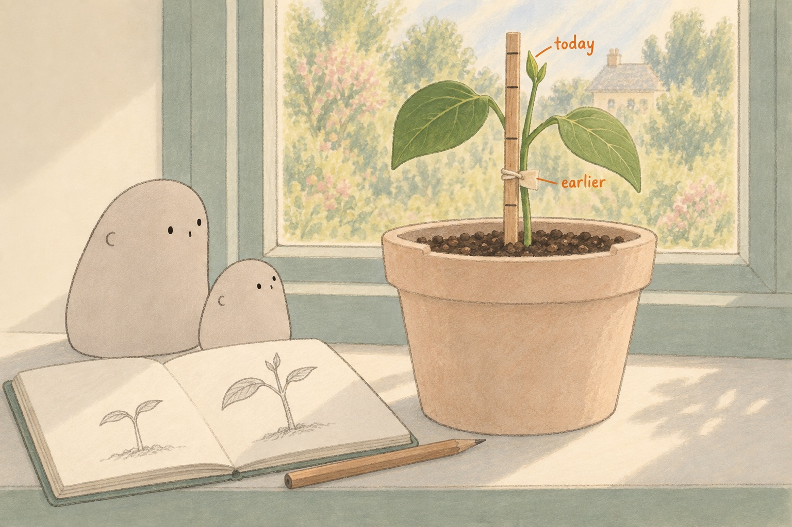

WONDER DAILY GRADE 2 · MATH
How much did it grow?
A bean becomes. · Curiosity-led family day
Name __________________________ Date _______________

| Day | 4 | 8 | 12 |
|---|---|---|---|
| Height | 8 cm | 14 cm | 23 cm |
Use the pretend notebook numbers. The picture is not a ruler.
1. On Day 4 it was 8 cm tall. On Day 8 it was 14 cm. How much taller?
14 − 8 = ______Draw or write your thinking.
2. On Day 12 it was 23 cm. In our number story, it later grows 9 cm more. How tall then?
23 + 9 = ______Draw or write your thinking.
3. How many days pass from Day 4 to Day 12? Count the spaces between days.
12 − 4 = ______Draw or write your thinking.
Would every real bean grow this much? No. These numbers are invented for our math story; real growth varies.